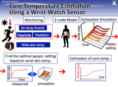
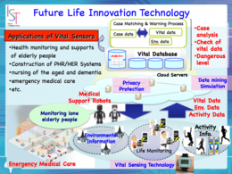
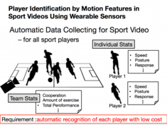

New Life Innovation Technology
Detection of Heatstroke
Due to recent global warming and frequent abnormal weather events in hot summer, the prevention and early detection of heatstroke have become major social concerns. The symptoms of heatstroke can prevent onset and alleviate the symptoms by supplementing with sufficient moisture (0.2% saline), preventing the weight loss within 2% and preventing the rise in the core body temperature. The core body temperature is the temperature in the deep part of the body, which is not easily influenced by the external environment unlike the ordinary body temperature measured in the axilla and oral cavity. It needs to be measured by inserting a measuring instrument in the ear or rectum and measuring the temperature of the eardrum and the rectal temperature. In general, it is difficult to easily measure the core body temperature and its changes while performing sports.

{kind=link}
In this study, we have constructed a “Human Thermal Model" that formulates heat production and heat transfer in the body. By analyzing the vital data measured using heart rate sensor and body surface temperature sensor and the environmental sensing information (solar radiation, wind speed, temperature, and so on), we estimate the values of unknown parameters (heat transfer amount from clothes, blood flow rate, perspiration reaction rate, and so on) of this human thermal model with high accuracy, and design and develop a method to estimate the core body temperature and its temporal change as accurately as possible.

{kind=link}
Health Supports for Elderly People
"Healthy life expectancy" is a period in which we can live healthily in our lifetime, which corresponds to the survival period that does not interfere with everyday life. For this reason, the difference between the average life expectancy and the healthy life expectancy is the survival period in the state requiring long-term care, and in Japan where the aging of the population is
progressing, it is required to increase the proportion of elderly who are energetic and strong and to make this period as short as possible. In our research group, we are conducting research on systems that realize the health monitoring and heatstroke detection of middle-aged and elderly households. Our aim is to extend healthy life expectancy by linking smartphones and multiple sensors installed in the home.
Mobile Sensing Technologies for Sports Athletes
In recent years, a large number of video analysis technologies for sports athletes and
sensing techniques for their vital information / momentum have been developed. By using big data analysis techniques such as deep learning and data mining techniques, It is becoming possible to estimate the activity situations of sports athletes in the real time. Our research group has been conducting research aiming at the creation of technology to measure and quantify in real time the state of activities of multiple athletes in group games and the state of cooperation among athletes.

{kind=link}
[Selected Publications]
S. Nakamura, S. Shigaki, A. Hiromori, H. Yamaguchi and T. Higashino: "A Model-based Approach to Support Smart and Social Home Living", Proceedings of the 2015 ACM International Joint Conference on Pervasive and Ubiquitous Computing (UbiComp 2015), pp.1101-1105, 2015.
T. Higuchi, H. Yamaguchi and T. Higashino: "Mobile Devices as an Infrastructure: A Survey of Opportunistic Sensing Technology", Journal of Information Processing, Vol.23, No.2, pp.94-104, 2015. (invited paper)
T. Hamatani, A. Uchiyama and T. Higashino: "Real-Time Calibration of a Human Thermal Model with Solar Radiation Using Wearable Sensors", Proceedings of the 2015 workshop on Wearable Systems and Applications (WearSys 2015), pp.45-50, 2015.
T. Hamatani, A. Uchiyama and T. Higashino:
"Estimating Core Body Temperature based on Human Thermal Model using Wearable Sensors", Proc. of 30th Annual ACM Symp. on Applied Computing (SAC 2015), pp.521-526, 2015.
A. Uchiyama, T. Hamatani and T. Higashino: "Estimation of Core Temperature Based on a Human Thermal Model using a Wearable Sensor", Proc. of IEEE 4th Global Conf. on Consumer Electronics (GCCE 2015), 2015. (Invited Talk)